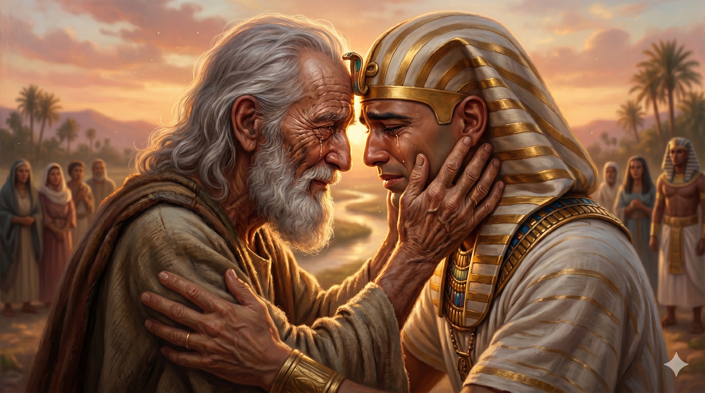

고센 땅의 지평선에서 애굽의 수레를 타고 달려온 총리 요셉이, 백발의 아버지 야곱의 목을 끌어안고 오래도록 운다. 22년의 시간이 단 한 번의 포옹으로 봉인된다.
야곱이 유다를 요셉에게 미리 보내어 자기를 고센으로 인도하게 하고 다 고센 땅에 이르니 요셉이 그의 수레를 갖추고 고센으로 올라가서 그의 아버지 이스라엘을 맞으며 그에게 보이고 그의 목을 어긋맞추어 안고 오래 우니 이스라엘이 요셉에게 이르되 네가 지금까지 살아 있고 내가 네 얼굴을 보았으니 지금 죽어도 족하도다 — 창세기 46:28–30
브엘세바의 밤 제단에서 "야곱아 야곱아" 부르시던 하나님의 음성을 들은 뒤, 야곱의 대가족 일흔 명은 남쪽 길을 따라 애굽으로 내려왔습니다. 그 길목에서 야곱은 가장 신뢰하는 아들 유다를 먼저 보내어 "길을 정하게" 합니다. 한때 속이고 도망치던 아버지가, 이제는 질서 있게 가족을 이끌고 앞길을 마련하는 사람이 되어 있습니다. 그리고 고센 땅에 이르자, 총리 요셉은 "수레를 갖추고" — 애굽의 왕족이 타는 격식 있는 수레를 타고 — 고센으로 올라옵니다. 아들이 아버지에게 "내려가는" 것이 아니라 "올라갑니다." 낮아진 아들이, 존귀해진 뒤에도 여전히 낮아져서 아버지에게로 올라오는 장면입니다. 권세가 사람을 변하게 하는 세상에서, 요셉의 변하지 않는 효심은 그 자체로 한 편의 복음입니다.
요셉이 나타나자 본문은 숨을 멎게 하는 한 문장으로 표현합니다 — "그의 목을 어긋맞추어 안고 오래 우니." 22년 만입니다. 요셉이 열일곱에 팔려 나갔고 서른에 총리가 되어 일곱 해 풍년과 두 해 흉년이 지났으니, 계산하면 22년의 간극입니다. 그 오랜 세월, 야곱은 아들을 잃었다는 슬픔 위에서 하루하루를 연명해 왔고, 요셉은 이방의 땅에서 노예와 죄수와 총리를 차례로 겪으며 살아남았습니다. 그 모든 긴 이야기가, 이 한 문장의 포옹 안에 녹아내립니다. 흥미로운 것은 본문의 화자가 여기서 야곱을 "이스라엘"이라 부른다는 사실입니다. 가장 인간적으로 무너져 눈물을 쏟는 그 장면에서, 성경은 그를 "하나님과 겨루어 이긴 자"라는 이름으로 부릅니다. 진정한 이스라엘은 절제된 사람이 아니라, 하나님 안에서 마음껏 울 줄 아는 사람입니다. 그리고 야곱은 이렇게 고백합니다 — "내가 네 얼굴을 보았으니 지금 죽어도 족하도다." 그토록 움켜쥐고 살던 사람이, 이제 "충만"을 말합니다.

"내가 네 얼굴을 보았으니 지금 죽어도 족하도다." 아버지의 손이 아들의 얼굴을 오래 만지고, 저녁 햇빛이 두 사람의 젖은 뺨을 황금빛으로 물들인다.
하나님의 시간은 우리의 시간보다 깊습니다. 야곱이 "요셉이 죽었다" 고 생각하고 살았던 22년은, 하나님의 달력에서는 "요셉이 자라나고 있는" 22년이었습니다. 오늘 당신의 삶에서 "이제 끝났구나" 싶은 어떤 이야기가 있다면 기억하십시오 — 하나님은 여전히 그 이야기의 다음 장을 쓰고 계실 수 있습니다. 완결처럼 보이는 상실 안에도, 하나님은 고센을 준비해 두십니다. 다만 우리의 몫은, 오늘 하루를 신실하게 살아내며 하나님의 다음 페이지를 기다리는 것입니다.
또한 이 장면은 사랑이 표현되어야 한다는 사실을 가르쳐 줍니다. 요셉은 총리의 격식을 갖춰 수레를 타고 왔지만, 아버지를 만나는 순간 그 모든 체면을 내려놓고 목을 끌어안고 오래 웁니다. 우리는 흔히 "다 알겠지" 하며 사랑의 표현을 아낍니다. 그러나 늙어 가는 부모에게, 자라 가는 자녀에게, 함께 싸매어 온 배우자에게 — 우리가 살아 있는 동안 표현된 사랑은 훗날 가장 값진 기억이 됩니다. 지금 목을 어긋맞추어 안아야 할 사람이 있다면 미루지 마십시오. 야곱처럼 "지금 네 얼굴을 보았으니 족하도다" 말할 수 있는 오늘이 인생에서 많이 남지 않습니다.
22년의 공백 끝에 하나님은 한 번의 포옹을 준비하셨습니다.
끝난 것 같은 이야기도 하나님 안에서는 아직 씌어지고 있습니다.
오늘 사랑하는 이의 목을 어긋맞추어 안으십시오 — 지금이 족한 때입니다.